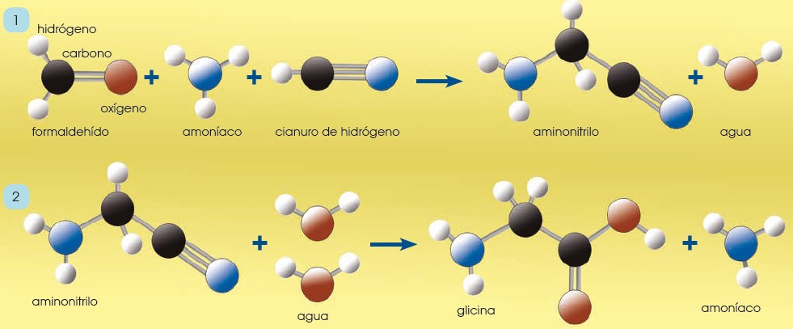
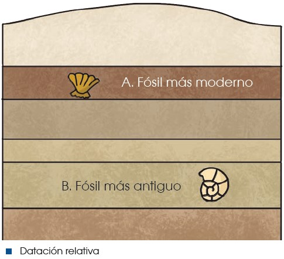
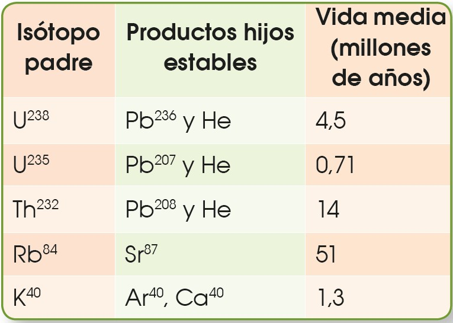

4 Origen y evolución de la Tierra
Mucho después del origen del universo, la materia creada chocaba y se fusionaba generando estructuras cada vez mayores llamadas planetesimales, las cuales seguían chocando entre sí para originar planetas. De esta manera, hace aproximadamente 4500 millones de años, se formó la Tierra.
A medida que los protoplanetas chocaban entre ellos en el proceso de formación de la Tierra primitiva, la energía liberada por los impactos, así como la desintegración de los elementos radioactivos, incrementaron la temperatura, y provocaron que los materiales que formaban el planeta se fundieran. De esta manera, se produjo una segregación durante la cual los componentes más pesados se desplazaron hacia el centro por efecto de la gravedad, mientras que los más ligeros quedaron en las capas exteriores.
Poco a poco, estos materiales fueron enfriándose y solidificándose, y produjeron una delgada corteza. La dinámica interna del planeta condujo a una serie de episodios volcánicos continuados, durante los cuales se liberaron al exterior los gases generados por el magma, tales como CO2, SO2, compuestos de nitrógeno y vapor de agua. Este último se condensó en la atmósfera, y originó una capa nubosa de gran potencia, que precipitó en forma de lluvia sobre la superficie y originó los océanos.
En la Tierra primitiva, con una atmósfera reductora, pobre en oxígeno, podrían haberse formado una gran variedad de compuestos orgánicos. Algunos científicos afirman que, solo con la energía que se libera actualmente en la Tierra en forma de relámpagos, las reacciones en la atmósfera habrían podido formar en 100000 años materia orgánica suficiente como para cubrir la superficie de la Tierra con un espesor de un metro. Estas moléculas, arrastradas por la lluvia, se acumularían en los océanos, que quedarían convertidos en una suspensión de materia orgánica: algo parecido a un caldo, el caldo primigenio.
A partir de este punto, se iniciaría un proceso de evolución química, a través del cual las moléculas orgánicas se irían perfeccionando, creando un sistema de autorreplicación basado en los ácidos nucleicos (ADN y ARN). De este modo, las moléculas orgánicas crearían un entorno propio en el que se aislarían gracias a capas de sustancias grasas o lípidos, que delimitarían los primeros protoorganismos.

Estos primeros organismos, semejantes a las bacterias actuales, se alimentarían de la materia orgánica presente en el agua de los océanos hasta que esta dejó de ser abundante. Entonces, obligados a buscar nuevas estrategias de obtención de nutrientes, un grupo de seres vivos descubriría una reacción que habría de cambiar radicalmente el aspecto del planeta: la fotosíntesis.
La captación de CO2 y la liberación a la atmósfera de O2 por parte de los organismos autótrofos tendrá una serie de consecuencias que marcarán la evolución del planeta y de sus pobladores.
| El descenso de la concentración atmosférica de CO2 provoca: |
|
| El incremento de la concentración atmosférica de O2 produce: |
|
Si observamos las atmósferas de los otros dos planetas interiores que disponen de ella, Venus y Marte, observaremos que se basan fundamentalmente en CO2 y N2, tal y como se supone que era la primitiva atmósfera terrestre. La Tierra es el único planeta que conocemos con un porcentaje de oxígeno atmosférico cercano al 20 %, producto de la actividad de los seres vivos.
Métodos de datación y eras geológicas
La datación de los acontecimientos geológicos que se han sucedido en el planeta Tierra se ha realizado de diversas maneras. En primer lugar cabe diferenciar entre la datación relativa y la datación absoluta.
La datación relativa nos informa que materiales son más antiguos que otros, pero no nos dice cuáles son sus edades. Por ejemplo, podemos saber que un fósil A situado en un estrato horizontal por encima de otro, es más moderno que otro fósil B contenido en el estrato inferior, pero no obtenemos información de cuál es su edad.

Para realizar una datación absoluta se utilizan actualmente métodos de radiocronología. Estos métodos se basan en la capacidad de desintegración de los isótopos radiactivos de diferentes elementos. Los elementos radiactivos o padres se desintegran y dan lugar a los elementos radiogénicos. Así, en una determinada roca, a partir del momento en que se forma y a medida que pasa el tiempo, aumenta el porcentaje de los elementos radiogénicos y disminuye el de los radiactivos. Si conocemos la tasa de desintegración del elemento radiactivo en cuestión y los porcentajes en los que aparece en la roca junto con sus elementos hijos, podremos inferir la época de formación de dicha roca.
| La datación por carbono-14. |
|---|
Uno de los métodos de determinación de la edad de las sustancias orgánicas por radiocronología es el método del carbono-14. Este es un isótopo radiactivo del carbono que se origina en las capas altas de la atmósfera y que es incorporado a lo largo de la vida por plantas y animales. Se mantiene una proporción constante entre el carbono-14 y el carbono- 12 ordinario. A partir de la muerte del organismo, la cantidad de carbono-14 empieza a disminuir, porque se detiene su incorporación a la vez que va desintegrándose y da lugar a carbono-12. Conociendo la relación que existe entre carbono-14 y carbono-12 en una muestra de materia orgánica, podemos conocer de forma muy precisa la fecha de la muerte del organismo. El carbono-14 tiene una vida media muy breve (5730 años) y, por ello, solo es aplicable a muestras de menos de 40 000 años de antigüedad. |
Cuando una roca ígnea se solidifica, se forman minerales que atrapan isótopos radiactivos, los cuales iniciarán su desintegración hacia los elementos hijos estables. Los isótopos más utilizados en datación geológica son los de la tabla adjunta. La datación de las rocas nos permite establecer una escala de tiempo geológico sobre la cual situar los acontecimientos y etapas por los cuales ha pasado el planeta. Las eras y períodos en los que se divide la historia de la Tierra no tienen la misma duración, ya que esta escala se estableció en función de las formas de vida fósiles presentes en las diferentes rocas, y se determina posteriormente la datación absoluta de las mismas.

4.1 Escala temporal geológica

- Precámbrico:
Es un supereón que abarca la mayor parte de la historia de la Tierra antes de la aparición de organismos con conchas duras o esqueletos. Este eón se divide en tres períodos: el Hádico, el Arcaico y el Proterozoico. Después del Precámbrico, sigue la división en eras geológicas, como la Paleozoica, la Mesozoica y la Cenozoica.
Eón Hádico (4560 a 4000 millones de años): Formación de la Tierra y condiciones inhóspitas.
Eón Arcaico (4000 a 2500 millones de años): Formación de océanos y primeras formas de vida unicelular.
Eón Proterozoico (2500 a 541 millones de años): Evolución de organismos unicelulares y formación de la supercontinente Rodinia.
Período Paleoproterozoico (2500 a 1600 millones de años): Desarrollo de cianobacterias y primeras acumulaciones significativas de oxígeno.
Período Mesoproterozoico (1600 a 1000 millones de años): Formación de supercontinentes y diversificación de eucariotas.
Período Neoproterozoico (1000 a 541 millones de años): Glaciaciones globales y aparición de organismos multicelulares complejos.
- Era Paleozoica:
Cámbrico (541-485 millones de años): Aparición de vida multicelular, explosión de diversidad biológica.
Ordovícico (485-443 millones de años): Desarrollo de los primeros peces y plantas terrestres.
Silúrico (443-419 millones de años): Expansión de los bosques y aparición de los primeros insectos.
Devónico (419-358 millones de años): Desarrollo de los vertebrados terrestres y plantas con semillas.
Carbonífero (358-298 millones de años): Formación de grandes bosques de helechos y aparición de los primeros anfibios.
Pérmico (298-252 millones de años): Diversificación de los reptiles y formación de Pangea.
Era Mesozoica:
Triásico (252-201 millones de años): Dominio de los dinosaurios y primeros mamíferos.
Jurásico (201-145 millones de años): Auge de los dinosaurios y evolución de los mamíferos.
Cretácico (145-66 millones de años): Extinción de los dinosaurios no avianos y proliferación de mamíferos.
Era Cenozoica:
Paleógeno (66-23 millones de años):
Paleoceno (66-56 millones de años): Diversificación de mamíferos.
Eoceno (56-34 millones de años): Aparición de los primeros primates y ungulados.
Oligoceno (34-23 millones de años): Evolución de los primeros homínidos.
Neógeno (23-2.6 millones de años):
Mioceno (23-5.3 millones de años): Evolución de homínidos tempranos.
Plioceno (5.3-2.6 millones de años): Diversificación de homínidos.
Cuaternario (2.6 millones de años hasta el presente):
Pleistoceno (2.6 millones de años hasta aproximadamente 11,700 años atrás): Glaciaciones y evolución de Homo sapiens.
Holoceno (Aproximadamente 11,700 años atrás hasta el presente): Desarrollo de civilizaciones humanas.